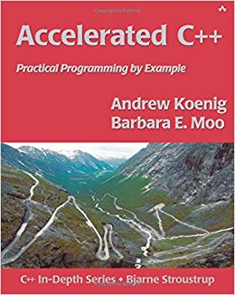
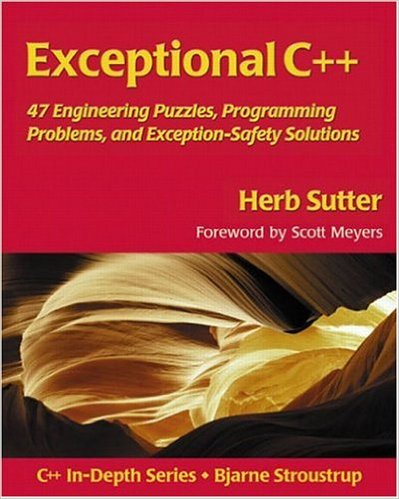
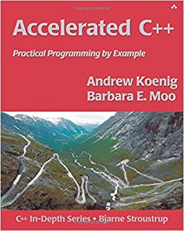
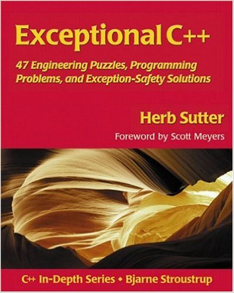
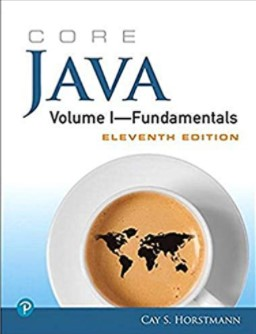
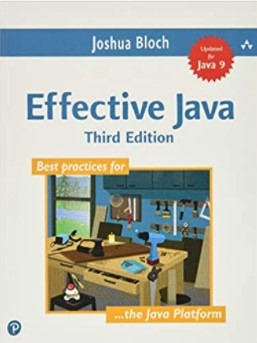
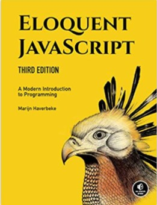

Software Engineering
Bash tricks ([http:stackoverflow.comquestions68372/what-is-your-single-most-favorite-command-line-trick-using-bash?page=1&tab=votes
Programming
Programming Languages
Pierce, Benjamin. Types and programming languages. The MIT Press, 2002.
Pierce, Benjamin & etc. Software Foundations. Online Book, 2014.
C
The C Programming Language
Pointers on C
C Traps and Pitfalls
Expert C Programming
C++
C++ Primer, Accelerated C++, The C++ Programming Language
C++ Templates
Effective C++, More Effective C++, Exceptional C++, More Exceptional C++, Effective STL
C++ Coding Standards, Exceptional C++ Style
Inside the C Object Model
 





The Definitive C++ Book Guide and List C++ Standard 2017 http://www.amazon.com/Clean-Code-Handbook-Software-Craftsmanship/dp/0132350882 http://www.cppreference.com/ http://www.cpp4u.com/
Java
 
JavaScript

Python
Python: Python + Ipython (廖雪峰，Learning Python, Python源码剖析)
Data Science: NumPy SciPy Pandas + Matplotlib (Python for Data Analysis)
Machine Learning: Scikit-learn
Deep Learning: Tensorflow + NLTK
Learning Python
Python Cookbook
Effective Python
Fluent Python
Include this in the first line of the python code: #! /usr/bin/env python
Every file of Python source code whose name ends in a .py extension is a module.
An attribute is simply a variable name that is attached to a specific object (like a module).
The build-in dir function can be used to list all the names available inside a module.
Everything in Python is an object, and almost everything has attributes and methods.
Six main build-in data types: numbers, strings, lists, dictionaries, tuples, and sets.
Literals are the expressions that generate objects, e.g., 'spam’ is a literal that generates a string object.
Both lists and dictionaries may be nested, can grow and shrink on demand, and may contain objects of any type.
Difference between lists and tuples: lists are mutable while tuples are immutable.
Python is dynamically and strongly typed: dynamic typing is a model that tracks the type automatically instead of requiring declaration code, and strongly typed is a constraint that you can perform only the operations that are valid for its type.
Reference acts like pointers.
math, random